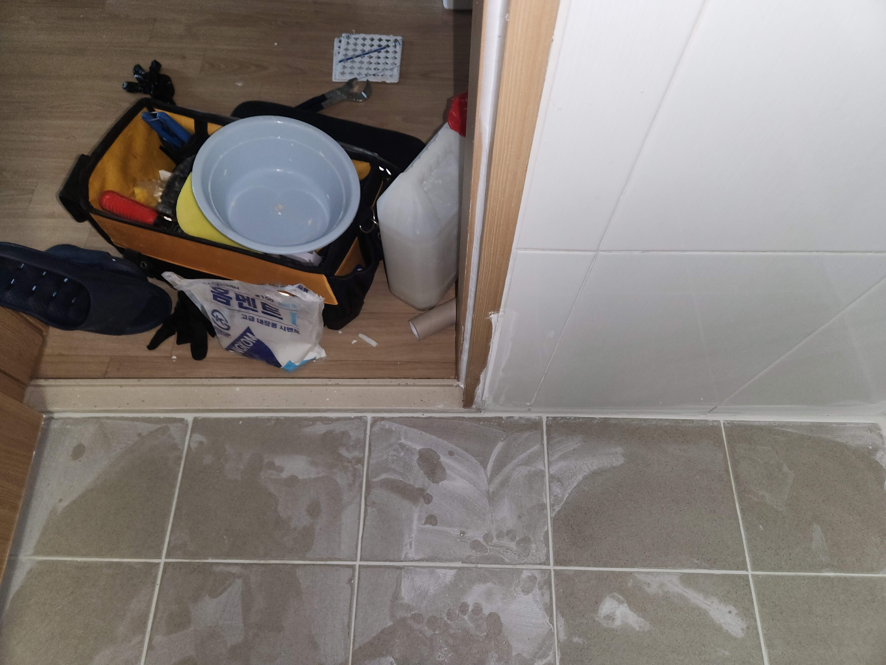
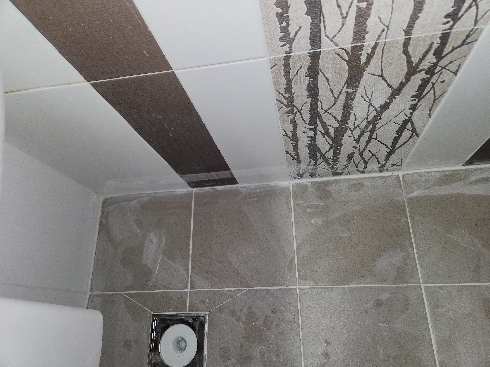
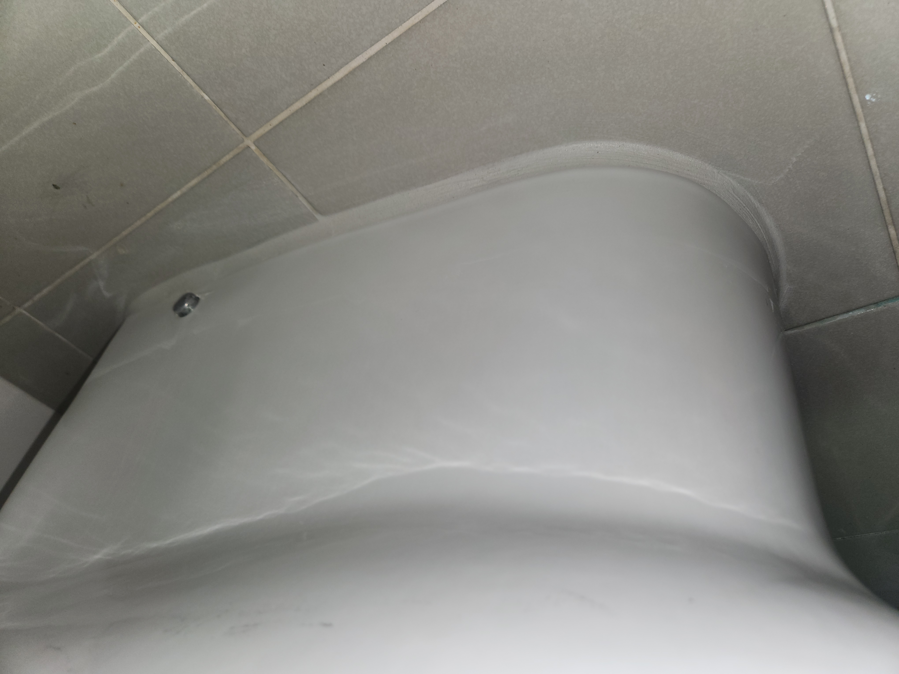

화장실누수 신고를 받고 출동한 현장입니다. 화장실 벽 타일 사이 줄눈(메지)이 오래되어 갈라지고 검게 변색되면서, 그 틈으로 물이 스며들어 배면 쪽에 누수가 의심되는 상황이었습니다.
타일 자체는 멀쩡해 보여도 줄눈이 삭으면 그 틈으로 물이 계속 침투해 방수층을 서서히 손상시키기 때문에, 눈에 잘 띄지 않지만 화장실누수의 흔한 원인 중 하나입니다. 기존의 삭은 메지를 제거하고 바닥과 벽 이음부까지 꼼꼼히 확인했습니다.
방수 성능이 좋은 메지재로 재시공을 진행했습니다. 단순히 겉보기 줄눈만 채우는 것이 아니라 이음부 안쪽까지 방수재가 충분히 밀착되도록 작업했고, 변기와 바닥이 만나는 부분, 배수구 주변처럼 물이 자주 고이는 자리는 더 꼼꼼하게 마감했습니다. 작업 후 물을 뿌려 방수 처리가 제대로 됐는지 확인했습니다.
화장실 타일 줄눈이 검게 변하거나 갈라져 있다면 단순 미관 문제가 아니라 누수로 이어질 수 있는 신호일 수 있습니다. 방치하지 마시고 미리 점검받아 보시길 권해드립니다.
비슷한 증상으로 문의하실 곳을 찾고 계신다면 전화로 접수해 주세요. 접수 건은 확인 후 신속하게 연결해 안내해 드리며, 현장 진단 후 견적에 동의하신 뒤에만 작업이 진행됩니다.